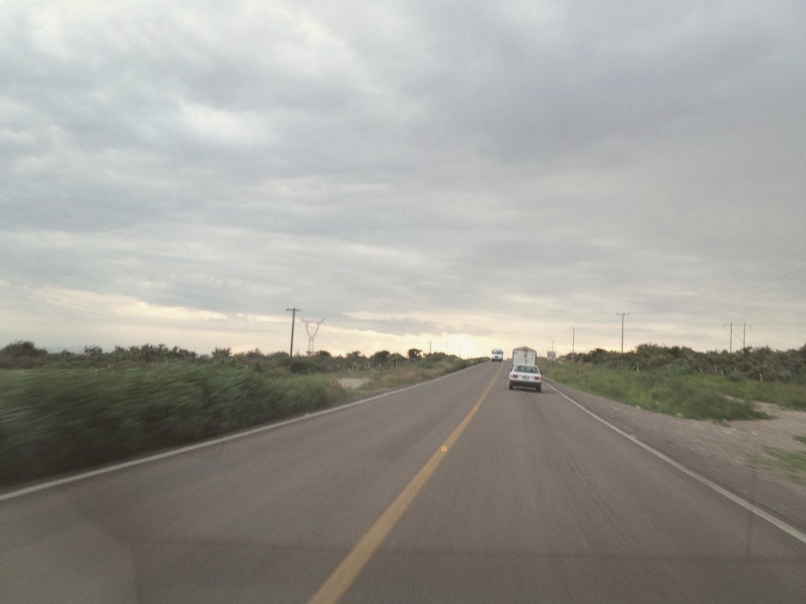
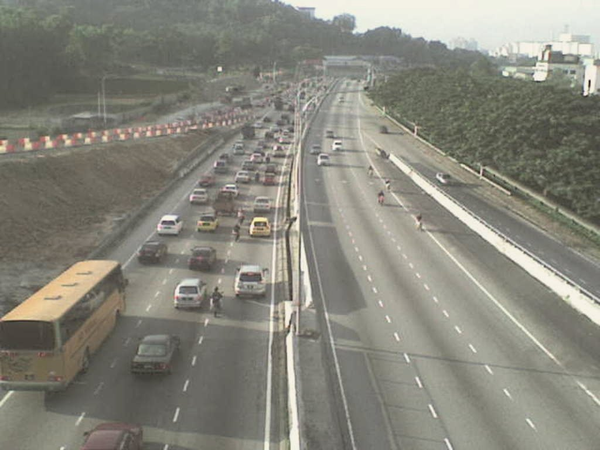
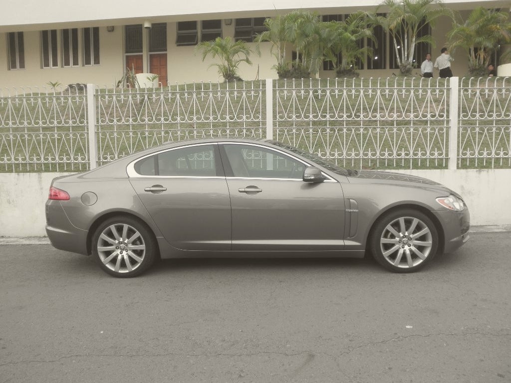

High Court update · № 02
Lawgistics
Lawgistics
High Court update
Kuala Lumpur · 1968

Fig. 01 — A two-lane road, private land
1968
A road is laid
across
private
Land.
01 / 15
Ever since

Fig. 02 — Traffic, Kuala Lumpur
Every day
Cars have
driven over it
Every day.
02 / 15
1968 — 2026
58
years.
Everyone
assumed it was
Acquired.
03 / 15
The registered co-owners
Fig. 03 — Kuala Lumpur
2026
Two owners
went to
Court.
04 / 15
One simple question
Fig. 04 — The file
?
Where is the
Paperwork?
05 / 15
The government could not produce it
No
gazette
declaration.
No
award.
No
notice
of
possession.
06 / 15
Land Acquisition Act 1960
None of the
Required
documents.
Declaration · Award · Possession
07 / 15
The High Court ruled
The registered
title
Still stood.
08 / 15
Every day the road sat there
736.44 m² · private title
Public road · 1968
N ↑ · not to scale
Fig. 05 — The strip
736.44 m²
Every day, a
fresh
Trespass.
Limitation — failed · Acquiescence — failed
09 / 15
The remedy

Fig. 06 — The road stays
In use
Tear up the road?
Not realistic.
10 / 15
Damages instead
RM4.8
Million.
⅔ owners' share
RM7.2M market value
11 / 15
The lesson
A registered
title
Holds
12 / 15
The lesson
Until the state
proves
it
followed
the
Rules.
Even 58 years later
12 / 15
For landowners
The
Register,
not the road,
says what
you
own.
13 / 15
For the state
The
Paperwork
is
the
acquisition.
14 / 15
Source
Fazliah binti Abu Samah & Anor
v
Pengarah Tanah dan Galian WPKL & Ors
High Court · Kuala Lumpur
Full ruling in today's High Court Update
#MalaysianLaw · #CourtUpdate · #LandLaw · #PropertyLaw
Lawgistics
High Court update
15 / 15
High Court update · № 02
Lawgistics
Law. Explained.
With Mathew
Photographs are illustrative. CC BY 2.0 via Flickr / Open Images: Jorge Figueroa, Ahmad Adlan, Joshua Eckert, Fort George G. Meade Public Affairs Office, Jason Thien.